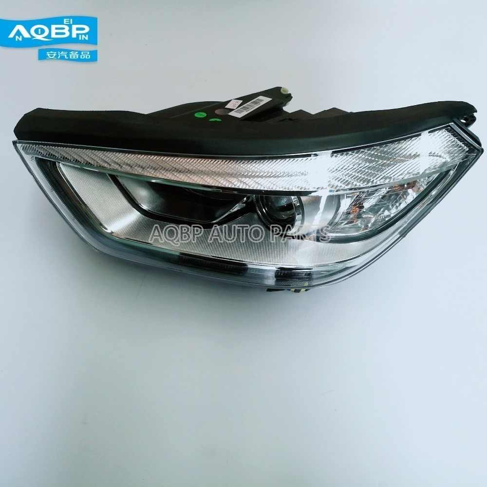

 FAROL
Os faróis, sejam de luz baixa ou alta, têm como função iluminar o caminho de um veículo. Geralmente utilizados à noite, o farol baixo é o mais indicado para boa iluminação das vias percorridas, sem causar irritação aos olhos de outros condutores ou pedestres. O uso do farol alto, geralmente é indicado para vias sem nenhuma iluminação e/ou situações emergenciais, como alertar motoristas sobre sua presença ou sobre a presença de obstáculos no sentido contrário.